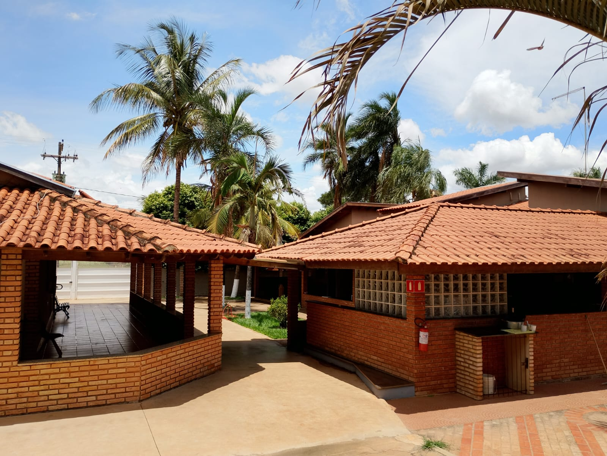

Quem Somos

A Clínica Reabilitação Humana (HUMANA), integrada ao Instituto Nacional de Traumatologia e Ortopedia (INTO), oferece reabilitação de alta e média complexidade em traumatologia, ortopedia e dependência química. Atendemos pacientes e famílias com suporte multidisciplinar humanizado.
+1.000 famílias atendidas e suporte 24h por WhatsApp. Somos referência em resultados integrados para pacientes e cuidadores, com alto índice de satisfação.
Missão
Oferecer assistência em reabilitação com foco no aprimoramento profissional, ensino e pesquisa, visando melhoria contínua e autonomia do paciente.
Visão
Ser referência nacional e internacional em qualidade e inovação na reabilitação profissional em traumatologia, ortopedia e dependência química.
Valores
- Humanização e empatia
- Foco no paciente e na família
- Qualidade e segurança
- Inovação e ética
- Trabalho em equipe e transparência
- Capacitação contínua e conhecimento
Lema: INTO – Humanização e Qualidade
O atendimento ocorre com equipe formada por assistentes sociais, agentes administrativos, médicos fisiatras, fonoaudiólogos, ortopedistas, terapeutas ocupacionais, psicólogos e enfermeiros especializados.
Equipe Humana

Tadeu
Psicólogo Clínica | Atenção em Dependência Química

Marcelo
Psiquiatra | Reabilitação Funcional

Daniela
Enfermeira | Assistência em Terapia Intensiva

Amanda
Nutricionista | Plano Nutricional para Reabilitação

Devis Lincoln
Terapeuta Ocupacional | Reabilitação Funcional
Tratamento de Dependência Química
Desintoxicação Segura
Processo supervisionado para eliminar substâncias do organismo, com acompanhamento médico 24/7. Oferecemos um ambiente seguro e confortável para o início da recuperação.
Benefícios: Redução de sintomas de abstinência, estabilização física e preparação para terapias subsequentes.
Duração média: 7-14 dias, adaptada às necessidades individuais.
Terapia Individual
Sessões personalizadas com psicólogos especializados em dependência química. Abordamos causas emocionais, gatilhos e estratégias de coping.
Benefícios: Desenvolvimento de autoestima, identificação de padrões comportamentais e ferramentas para prevenir recaídas.
Abordagens: Cognitivo-comportamental, terapia motivacional e mindfulness.
Grupos de Apoio
Encontros em grupo com outros pacientes em recuperação. Compartilhamento de experiências, motivação mútua e aprendizado coletivo.
Benefícios: Redução do isolamento, construção de rede de apoio e reforço de hábitos saudáveis.
Modelos: Narcóticos Anônimos, terapia de grupo e workshops educacionais.
Reintegração Social
Programas para reinserção na sociedade, incluindo atividades físicas, cursos profissionalizantes e apoio familiar.
Benefícios: Reconstrução de relacionamentos, desenvolvimento de habilidades e prevenção de recaídas através de rotinas positivas.
Atividades: Esportes, arte-terapia, voluntariado e orientação vocacional.
Outros Serviços
Acompanhamento nutricional, atividades físicas supervisionadas, consultas psiquiátricas e suporte jurídico para casos específicos.
Benefícios: Abordagem holística para saúde física e mental, com foco em bem-estar geral.
Exemplos adicionais: Yoga, meditação e programas de prevenção para familiares.
Apoio para Familiares e Cuidadores
Para quem procura ajuda para um ente querido, amigo ou conhecido, oferecemos informação prática e suporte emocional durante cada fase do tratamento.
- Orientação para reconhecer sinais de dependência e preparar o primeiro contato com a clínica.
- Como elaborar um plano de visita e acompanhamento respeitando limites e privacidade do paciente.
- Recursos para reduzir estresse do cuidador e fortalecer a rede de apoio familiar.
- Dicas de comunicação assertiva para evitar conflitos e promover motivação.
Nossa equipe de apoio familiar atende à família em reuniões periódicas e materiais educativos, para que o processo de reabilitação seja mais eficaz e seguro.
Agendar Avaliação agoraAgendamento Imediato de Avaliação
Preencha o formulário abaixo, que está incorporado diretamente do Google Forms.
* Se você precisar de atendimento urgente, entre em contato diretamente pelo WhatsApp (11) 9999-9999.
Depoimentos de Recuperação
Perguntas Frequentes
Quais tipos de tratamento a clínica oferece?
Oferecemos tratamento completo para dependência química incluindo desintoxicação, terapia cognitivo-comportamental, reabilitação física, acompanhamento psicológico e grupos de apoio. Nossa abordagem é multidisciplinar e focada na recuperação integral do paciente.
Como funciona o processo de internação?
O processo começa com uma avaliação inicial para entender as necessidades específicas do paciente. Após a internação, desenvolvemos um plano de tratamento personalizado que inclui desintoxicação supervisionada, terapias individuais e em grupo, atividades físicas e acompanhamento médico contínuo.
A clínica aceita convênios médicos?
Trabalhamos com diversos convênios médicos e planos de saúde. Entre em contato conosco para verificar a cobertura específica do seu plano e agendar uma avaliação.
Qual é a duração média do tratamento?
A duração do tratamento varia de acordo com as necessidades individuais de cada paciente, mas geralmente recomendamos um período mínimo de 3 meses para resultados efetivos. Alguns pacientes podem precisar de programas mais longos para uma recuperação completa.
Como agendar uma consulta ou avaliação?
Para agendar uma consulta, entre em contato conosco pelo WhatsApp (11) 9999-9999 ou visite nossa clínica. Realizamos uma avaliação inicial gratuita para entender melhor sua situação e apresentar as opções de tratamento disponíveis.